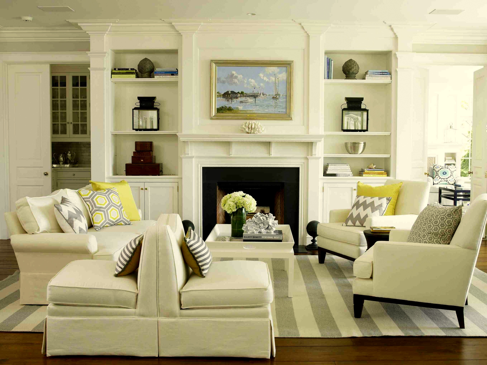
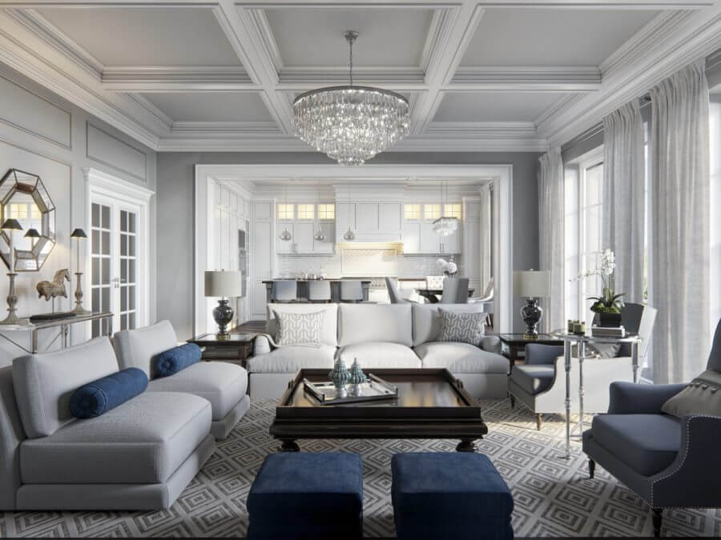

Дизайн вітальні в американському стилі не має характерного кольору. Обробка стін передбачає шпалери, доповнені дерев'яними панелями в нижній частині стіни. Оскільки вітальня поєднана з кухнею, необхідно зонувати простір за допомогою двох видів світла. Однією із особливостей - є камін.


У центрі вітальні розташовується м'який диван, пара крісел і кавовий столик. Затишно буде виглядати крісло-качалка або журнальний стіл з плетеними елементами. Вся основна меблі знаходиться по центру, а біля стін розташовуються тумбочки з масивного дерева. Присутні книжкові та квіткові полки. Також є трохи аксесуарів.